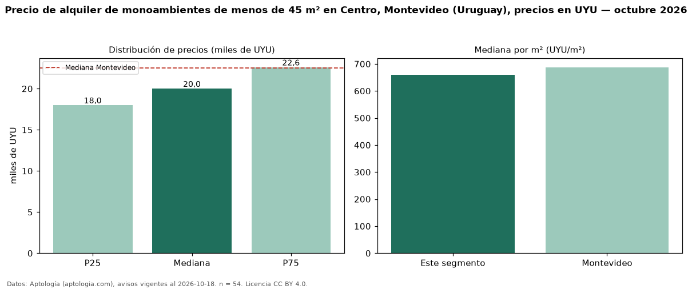

Precio de alquiler de monoambientes de menos de 45 m² en Centro, Montevideo (Uruguay), precios en UYU — octubre 2026
En Centro, Montevideo (Uruguay), la mediana de canon mensual de monoambientes de menos de 45 m² es UYU 20.000, según 54 avisos vigentes. Eso es 5 % menos que la mediana de todos los monoambientes en alquiler de Centro (UYU 21.000, n = 68); este segmento reúne el 79 % de esos avisos. Por metro cuadrado, la mediana es UYU 660/m² al mes (n = 54), 2 % por encima del conjunto de referencia (UYU 650/m²). El área mediana anunciada es 30 m². La cuota de mantenimiento o condominio mediana declarada es UYU 3.300 al mes (n = 46), aparte del canon. La mediana de todos los monoambientes en alquiler de Montevideo es UYU 22.500 (−11 % de diferencia). La mitad central de los avisos va de UYU 18.000 a UYU 22.600 (razón 1,3), una dispersión baja. Datos: Aptología (aptologia.com), CC BY 4.0 — https://www.aptologia.com/uy/alquiler/montevideo/centro. Archivos: PDF, CSV con las cifras y gráfica PNG.

| Avisos únicos | 54 |
|---|---|
| Percentil 25 | COP 18.000 |
| Mediana | COP 20.000 |
| Percentil 75 | COP 22.600 |
| Mediana por m² | COP 660 |
Fuente: avisos vigentes de portales inmobiliarios recopilados por Aptología, deduplicados (mínimo 30 avisos únicos por celda). Precios pedidos, no cerrados. Fecha: 2026-10-18.